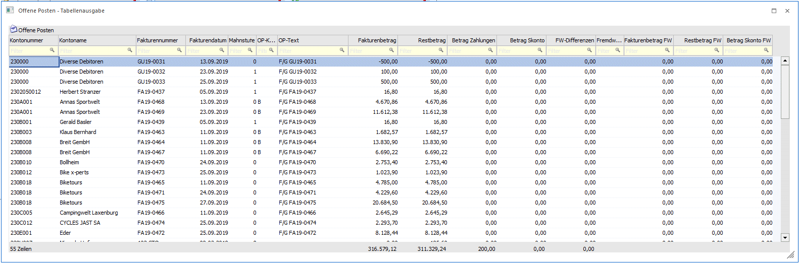
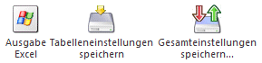
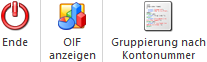
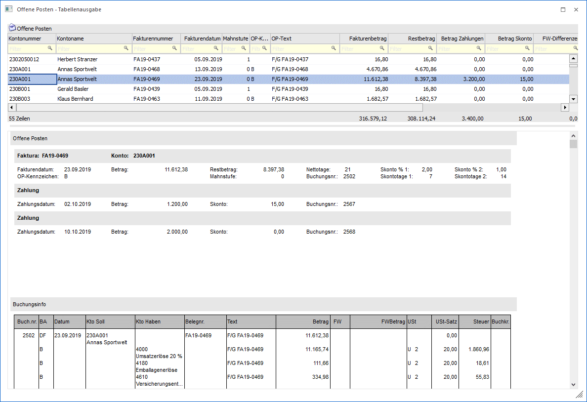

Durch die Anwahl des Ausgabe-Buttons "Ausgabe Tabelle" im Programm Offene Posten - Auswertung werden alle zuvor selektierten Offene Posten in Form einer WinLine Tabelle dargestellt.
Hinweis
Die Basis der Offenen Posten in der Tabelle bildet immer die zuvor getroffene Selektion in der Offene Posten - Auswertung. D.h. in der Tabelle kann dieses Datenmaterial nur weiter eingeschränkt werden.
Hinweis
Die Tabellenausgabe steht nur für die Auswahl "Kontoblatt" zur Verfügung.

Tabelle "Offene Posten"
In der Tabelle werden alle selektierten Offene Posten angezeigt. Mit Hilfe der Suchzeile kann gezielt und komfortabel nach Offenen Posten gesucht werden.
Spalten können über das Kontextmenü der rechten Maustaste (Funktion "Spalten anzeigen/verstecken") in die Tabelle eingebunden bzw. entfernt werden.
Ø Drilldown Funktion
Die Spalten "Kontonummer" und "Fakturennummer" sind mit einem Drilldown versehen. Mit dem Auslösen der rechten Maustaste oder einem Doppelklick auf einen Drilldown einer Kontonummer kann unter anderem das Personenkonto angesehen werden. Mit dem Auslösen einem Drilldown auf eine Fakturennummer gibt es die Möglichkeit "Beleg anzeigen" zu wählen. Auch hier kann die Drilldown mittels Doppelklick ausgelöst werden. Die Beleganzeige öffnet entweder die Belegansicht oder "Archiveintrag suchen".
Tabellenbuttons

Ø Ausgabe Excel
Durch Anwahl des Buttons "Ausgabe Excel" wird der Inhalt der Tabelle nach Microsoft Excel übergeben.
Ø Tabelleneinstellungen speichern
Die Spalten einer Tabelle können grundsätzlich an beliebige Positionen verschoben, bzw. in der Breite entsprechend angepasst werden. Durch Anwahl des Buttons "Tabelleneinstellungen speichern" werden die Einstellungen benutzerspezifisch gespeichert und bei dem nächsten Aufruf des Programmpunktes wieder vorgeschlagen.
Ø Gesamteinstellungen speichern
Im Gegensatz zu "Tabelleneinstellungen speichern" können mit "Gesamteinstellungen speichern" mehrere Tabellenaufbauten gespeichert und nach Wunsch geladen werden. Zusätzlich werden Sonderfunktionen der Tabelle ebenfalls bei der Speicherung bedacht.
Buttons

Ø Ende
Mit Hilfe des Buttons "Ende" bzw. der Taste ESC wird das Fenster geschlossen.
Ø OIF anzeigen
Über den Button "OIF anzeigen" kann die Offene Posten Info und die Buchungsinfo des selektierten Offenen Postens am Ende der Tabelle angezeigt werden.

Ø Gruppierung nach Kontonummer
Der Button "Gruppierung nach Kontonummer" kann via Klick aktiviert werden und wird benutzerspezifisch gespeichert. Somit wird diese Ansicht beim Öffnen der Tabellenausgabe wieder mit der Gruppierung nach Kontonummer aufgezeigt.